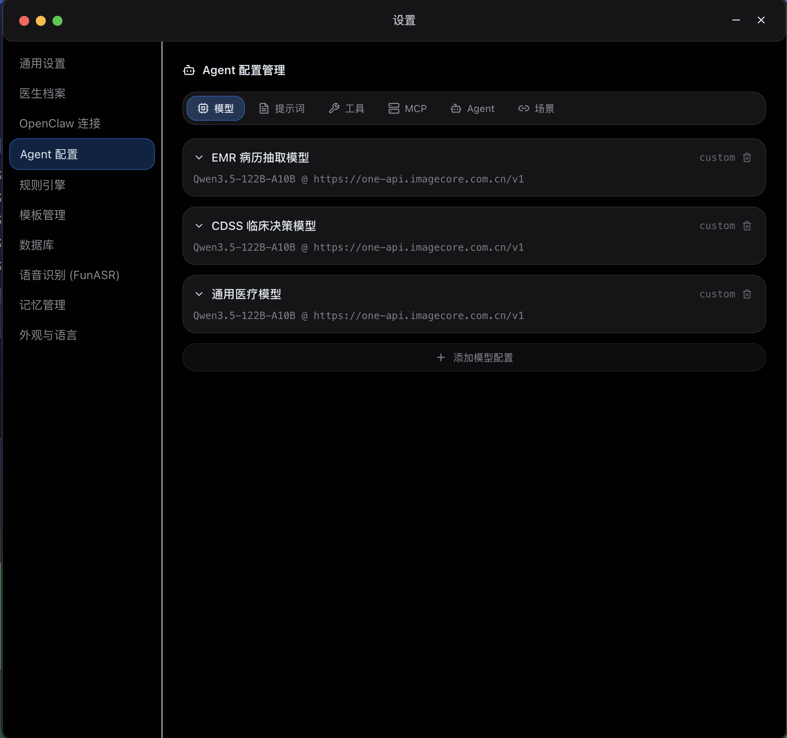
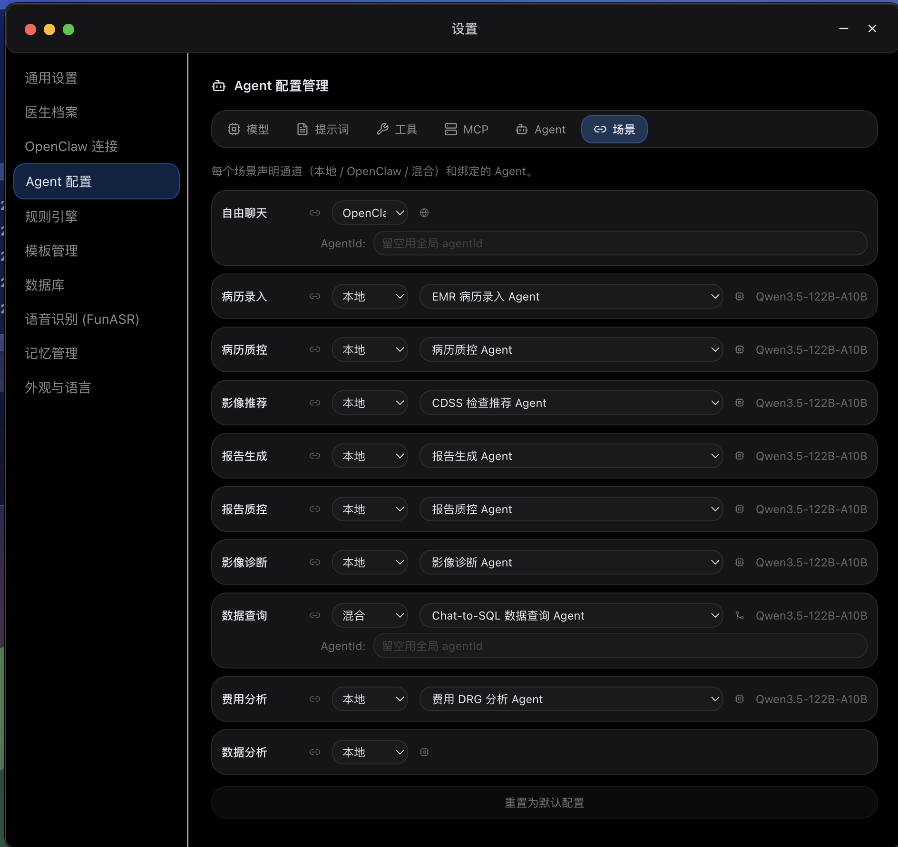

医疗 AI 的主要矛盾，正在从"模型能力不足"转向"架构能力缺位"。单点 AI、传统 CDSS、工作站插件和通用 Agent 编排框架都能解决部分问题，但很难同时回答场景感知、上下文组织、分层推理、执行控制、治理约束与持续进化这些系统级问题。
位于医院现有系统与 AI 能力之间，不替代，而是组织
HIS / EMR / PACS / RIS / LIS
挂号、收费、医嘱、阅片、存储
已有业务流程与数据资产
场景感知 · 上下文组织
推理调度 · 执行控制
治理约束 · 持续进化
医疗大模型 / 通用 LLM
规则引擎 / 知识库
工具调用 / Agent Harness
MCOS 不是 HIS/EMR/PACS 本身，也不是某个医疗大模型的别名，而是把多种能力组织进临床工作流的系统层。
L1-L4 构成前向运行链路，L5 横切治理，L6 负责持续进化
多模态信号采集与预处理——文本、影像、语音、行为、结构化事件。让系统"看见"临床现场。
已验证患者纵向上下文、当前 encounter 上下文、场景工作流上下文。把离散信息组织成语境，而不是堆叠 token。
已验证意图识别、推理、规划、工具调用。分层推理、显式不确定性、场景化认知模式。知道何时给建议，何时提示需要人工确认。
已验证建议、草稿、预填、受控写回——按风险等级分级执行。核心不是"自动化越多越好"，而是"在正确边界内安全落地"。
已验证横切所有层级的约束框架：权限分级、日志与审计链、风险控制与中断机制、责任归属。没有 L5，MCOS 只是能力系统；有了 L5，才是可落地的临床辅助系统。
建设中经验萃取、反馈学习、技能优化。让系统不停留于部署时的静态能力水平，而在实际使用中持续改进。
目标态MCOS 是什么，不是什么
| 维度 | MCOS 是什么 | MCOS 不是什么 |
|---|---|---|
| 系统定位 | 医疗 AI 的智能·认知底座 | HIS / EMR / PACS / RIS 本身 |
| 工程角色 | 医疗认知中间件平台 | 单个工作站或单个插件 |
| 能力职责 | 感知、上下文、推理、执行、治理、进化 | 单一影像算法或单一 CDSS 规则库 |
| 与模型关系 | 调度并约束模型能力进入工作流 | 某个医疗大模型的别名 |
| 与 Agent 框架 | 把通用 Agent 能力转化为医疗场景运行层 | 对通用框架的简单重命名 |
| 与医院系统 | 增强现有系统上层工作流 | 直接替代医院核心业务系统 |
RimagAi Brother 对 MCOS L1-L4 的工程级验证


诚实说明当前进展与未完成部分
RimagAi Brother 已在 7 个核心临床场景中，对 MCOS 前四层（L1-L4）的若干关键能力完成工程级验证，包含 58 个测试用例。可以审慎地说，高价值场景与前四层逻辑已获得初步支撑。
但不能说 MCOS 已完成平台化、合规化和临床终局价值验证。L5 治理层和 L6 进化层仍处于建设早期或目标态推演阶段。白皮书中的效率与延迟数据，应被视为工程验证阶段的参考值，而不是医院真实生产环境下的系统性临床结论。